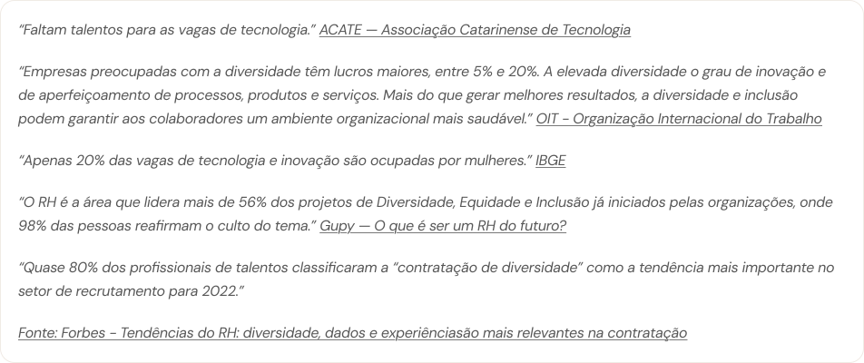
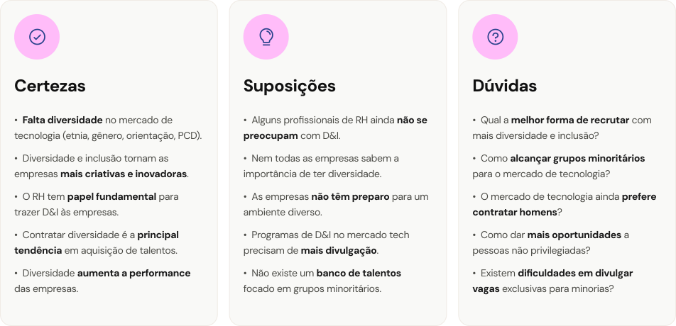
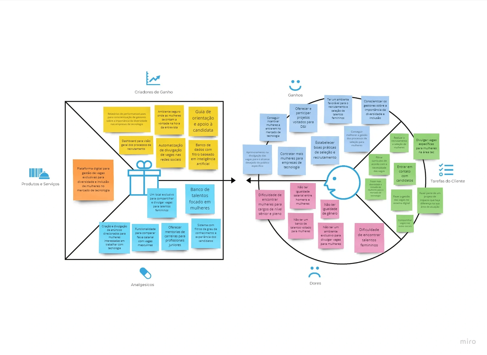
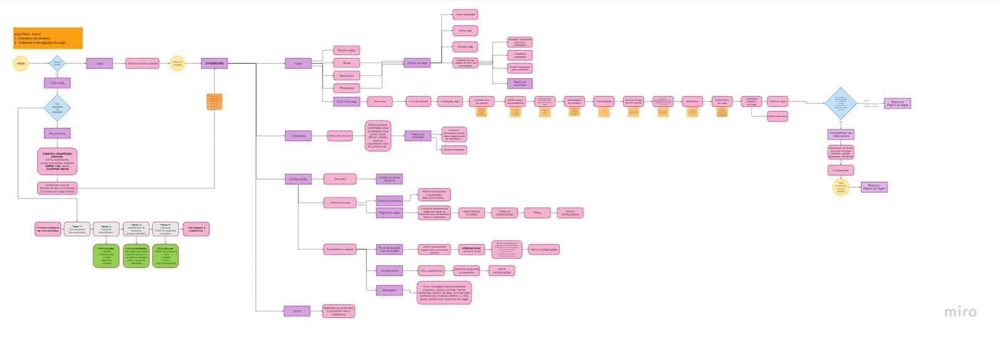

Recruta Elas ·
Estudo de caso: RecrutaElas, projeto para ajudar recrutadores a incluir mais mulheres na tecnologia.
Estudo de caso desenvolvido para o curso da Cubos Academy
Introdução
O estudo de caso teve como objetivo auxiliar os Tech Recruiters na busca por talentos femininos, visando promover a diversidade e inclusão no setor de tecnologia.
- Projeto
- Estudo de caso
- Minha participação
- UX/UI Designer
- Plataformas
- Desktop
- Linha do tempo
- Jan 2022 - Set 2022
Desafio
Nosso desafio foi desenvolver uma solução para abordar a questão: “Como trazer mais diversidade e inclusão para o mercado de tecnologia?”
Desafio
Recrutadores de tecnologia relatavam dificuldades para encontrar talentos femininos e não tinham nenhum ambiente para divulgar vagas voltadas para mulheres. Uma pesquisa com 61 recrutadores mostrou que apenas 49,2% das empresas tinham projetos de diversidade e inclusão, e dados do IBGE apontam que apenas 20% das vagas de tecnologia são ocupadas por mulheres.
Solução
Desenvolvemos o RecrutaElas, uma plataforma digital para gestão de vagas exclusivas voltadas à diversidade e inclusão de mulheres na tecnologia. A solução reúne cadastro e divulgação de vagas, banco de candidatas, agenda de entrevistas e dashboard de acompanhamento, priorizados via Matriz MoSCoW para focar no que geraria mais valor no MVP.
Resultados
Testamos o protótipo com 14 usuárias no Maze: 11 concluíram todas as tarefas e o fluxo de criar e compartilhar vaga atingiu 91,7% de sucesso. Os aprendizados guiaram melhorias de UX writing nos radio buttons e a remoção da obrigatoriedade de foto no cadastro, reduzindo atrito na jornada.
Descoberta
Desk Research
Iniciamos o projeto com uma Desk Research para compreender o cenário da diversidade e inclusão no mercado tech. A pesquisa explorou dados sobre contratação feminina, perfis profissionais, comportamento do mercado e os impactos da diversidade nas empresas.
Identificamos as seguintes informações
A partir dos insights levantados na Desk Research, percebemos que o tema era muito amplo e envolvia diferentes frentes de atuação. Por isso, decidimos fazer um recorte mais estratégico do problema, direcionando o projeto para um contexto específico dentro da diversidade e inclusão no mercado tech. Trabalhando no tema: “Como Auxiliar Tech Recruiters a incluírem mais mulheres no mercado de tecnologia?”

Matriz CSD
Após identificarmos, durante a pesquisa, a baixa representatividade feminina no mercado de tecnologia, seguimos para a etapa de construção da matriz CSD. Na matriz, mapeamos nossas certezas, suposições e dúvidas em relação ao cenário investigado.
Com a Matriz CSD concluída, utilizamos o Mapa Relacional para definir objetivos, hipóteses e técnicas das próximas pesquisas. A partir disso, aprofundamos o entendimento sobre o público-alvo e construímos a persona que guiaria as decisões do projeto.

Pesquisa quantitativa
Como parte da etapa de pesquisa, desenvolvemos um formulário no Google Forms direcionado recrutadores da área de tecnologia. Os objetivos com essa pesquisa foram as seguintes:
- Conhecer o perfil dos recrutadores e das empresas.
- Entender como a diversidade e inclusão de mulheres é abordada nas empresas.
- Como é o processo de recrutamento nas empresas
Respostas de recrutadores
61Foram registradas 61 respostas de recrutadores de tecnologia.
Perfil das pessoas participantes
85,2%Mulheres. Público formado principalmente por tech recruiters.
Faixa etária: 45,5% de 25 a 31 anos; 24,6% de 18 a 24 anos; 9,8% de 38 a 44 anos.
Diversidade e inclusão
49,2%Possuem projeto de diversidade e inclusão de mulheres.
39,3% não possuem; 11,5% não sabem.
Empresas participantes
- Tamanho: 37,7% de 100 a 999 colaboradores; 16,4% de 1.000 a 4.999; 16,4% de 30 a 99; 8,2% com 5.000 ou mais.
- Abrangência: 55,7% nacional e 39,3% internacional.
- Ramo: 73,8% tecnologia; 8,2% instituições financeiras; 6,6% indústria.
- Localização da matriz: 55,7% Sudeste; 29,5% Sul; 9,8% Centro-Oeste.
Divulgação das vagas
- 88,5% anúncios de vagas no LinkedIn
- 52,5% publicações orgânicas nas redes sociais
- 37,7% anúncios no Facebook e Instagram
- 23% e-mail marketing
- 18% Google Ads
- 3,3% Gupy
Recrutamento digital
77%Usam sistema digital para recrutamento e seleção; 23% não usam.
Sistemas mais usados: LinkedIn Recruiter (52,9%), Gupy/Kenoby (47,1%), Indeed (17,6%) e Glassdoor (13,7%).
Liderança e modalidade de trabalho
Mulheres em cargos de liderança: 31,1% das empresas têm de 20 a 30%; 21,3% têm de 0 a 1%; 16,4% têm de 11 a 20%; 9,8% têm de 41 a 50%.
Modalidade de trabalho: 75,4% home office; 54,1% híbrido; 29,5% presencial.
A maioria das pessoas que responderam foram do gênero feminino (85,2%) e de 18 a 31 anos (72,1%).
Observa-se que empresas com poucas mulheres em cargas de tecnologia tendem a não ter programas voltados para a inclusão.
Consultar o levantamento original completoPesquisa qualitativa · Entrevistas
Além da pesquisa quantitativa, também realizamos entrevistas com Tech Recruiters para aprofundar nossa compreensão sobre o cenário de contratação na área de tecnologia.
- Como recrutadores e empresas do mercado da tecnologia tratam as questões de diversidade e inclusão de mulheres.
- Como funcionam os processos de recrutamento dentro das empresas.
- Desafios e formas para facilitar a contratação de mulheres.
Participantes
4Duas mulheres e dois homens, de 25 a 31 anos.
Rotina de trabalho
Recrutamento e seleção, triagens de currículos e ajuda no marketing/divulgação de vaga.
Plataformas de trabalho
Compleo, LinkedIn, Facebook, Instagram, Gupy e ClickUp.
Entendimento de diversidade e inclusão
“A diversidade é muito importante para a empresa.”
“A diversidade é importante para a formação da cultura da empresa.”
“Ainda está muito enraizado que o mundo da tecnologia é voltado mais para os homens.”
Como D&I é trabalhado dentro da empresa
“Temos palestras voltadas para D&I.”
“Estou buscando estratégias direcionadas para o recrutamento de mulheres.”
Os resultados das pesquisas nos ajudaram não apenas a validar algumas hipóteses levantadas anteriormente e algumas dúvidas, mas também revelaram novos insights importantes sobre o cenário de recrutamento na tecnologia.
- Os tech recruiters possuem dificuldades de encontrar talentos femininos para incluir no mercado de tecnologia.
- Os tech recruiters sentem falta de ter um ambiente onde possam divulgar vagas que alcancem mais mulheres.
Canva de proposta de valor
Nessa etapa, buscamos entender quais funcionalidades e soluções o produto precisava oferecer para gerar valor real aos usuários, sempre considerando suas necessidades, expectativas e desafios identificados.Com essa dinâmica, conseguimos responder perguntas importantes como:
- O que é o produto?
- Quais funcionalidades ele contém?
- Como ele se diferencia dos competidores?
- Como queremos que as pessoas usem o produto?
- Qual sensação queremos causar?
- Qual problema queremos resolver?

Persona
Helena Alves
Tech Recruiter
29 anos · São Paulo · Mulher
Trabalha em uma empresa de TI porte médio
"Não há limite para o que nós, como mulheres, podemos realizar."
Objetivos
- Encontrar e recrutar talentos femininos para o mercado de tecnologia
- Incentivar mulheres a ingressarem no mercado de tecnologia
- Trabalhar em uma empresa com igualdade de gênero e que leve em consideração questões de diversidade e inclusão de pessoas
Desafios
- Trazer mais diversidade e inclusão para o mercado de tecnologia
- Criar um ambiente seguro onde as mulheres se sintam a vontade na hora da entrevista
- Encontrar um canal adequado para buscar talentos femininos para tecnologia
- Conscientizar os gestores das empresas sobre a importância da diversidade e inclusão de mulheres em cargos de tecnologia
Ideação
O produto
O Recruta Elas é uma plataforma digital para gestão de vagas exclusivas para diversidade e inclusão de mulheres no mercado de tecnologia
Feito para Tech Recruiters que querem trazer mais D&I
E feito também para candidatas que buscam por vaga exclusivas
Benchmarking
Foi realizado uma análise de concorrentes
Analisar como os fluxos e as funcionalidades são estruturados dentro das plataformas,
explorar as identidades visuais adotadas pelo mercado, buscando referências e tendências que pudessem contribuir para a construção da solução.
Task flow e User flow
Para orientar o desenvolvimento da plataforma web
Foi construído alguns fluxos de navegação com o objetivo de mapear a jornada dos usuários dentro da aplicação
E entender como interagiriam com o produto em diferentes cenários.
Wireframes
Os fluxos virou soluções visuais para validar a navegação e a arquitetura da plataforma.
Foram criadas 24 telas de baixa fidelidade para testar funcionalidades, interações e garantir uma experiência intuitiva
Até a entrega final com as telas de alta fidelidade
Userflow
Para orientar o desenvolvimento da plataforma web, construímos alguns fluxos de navegação com o objetivo de mapear a jornada dos usuários dentro da aplicação e entender como interagiriam com o produto em diferentes cenários.
Iniciamos essa etapa criando dois Task Flows focados no Golden Path o “caminho feliz” percorrido pela maioria dos usuários ao realizar as principais ações dentro da plataforma.Os fluxos desenvolvidos contemplavam as seguintes jornadas:
- Fazer cadastro na plataforma
- Cadastrar e publicar uma vaga.
Com os principais caminhos definidos, avançamos para a construção dos User Flows, que passaram por diferentes versões ao longo do processo. A primeira versão mapeava todos os caminhos possíveis que os usuários poderiam percorrer dentro da plataforma, considerando diferentes cenários e interações. Já a segunda versão foi refinada para focar exclusivamente no Golden Path, priorizando uma experiência mais objetiva e intuitiva para as principais tarefas do produto.

Identidade e interface
Design da plataforma
Validação
Teste de usabilidade
Para validar os principais fluxos da plataforma e identificar possíveis pontos de melhoria na experiência, realizamos testes de usabilidade utilizando a ferramenta Maze.
Durante o teste os usuários precisavam completar três tarefas no protótipo: criar conta, fazer login e criar e compartilhar vaga.
Pessoas participantes
14Teste realizado de forma não moderada.
Concluíram todas as tarefas
11Pessoas que concluíram todas as tarefas propostas dentro da plataforma.
Avaliação da experiência
8,4Média na escala de opinião, com 11 respostas.
Criar conta
76,9%Sucesso na tarefa · 13 participantes nesta missão.
- Tempo médio
- 28,7 s
- Cliques incorretos
- 37,3%
- Desistência
- 23,1%
- Pontuação Maze
- 58
Fazer login
75,0%Sucesso na tarefa · 12 participantes nesta missão.
- Tempo médio
- 31,2 s
- Cliques incorretos
- 18,0%
- Desistência
- 16,7%
- Pontuação Maze
- 70
Criar e compartilhar vaga
91,7%Sucesso na tarefa · 12 participantes nesta missão.
- Tempo médio
- 22,4 s
- Cliques incorretos
- 20,1%
- Desistência
- 8,3%
- Pontuação Maze
- 82
Além das missões configuradas no Maze, também aplicamos uma escala de opinião ao final do teste para compreender melhor a percepção das participantes sobre a experiência de uso, identificando sentimentos, dificuldades e o nível de satisfação durante a navegação na plataforma.
Aprendizados obtidos com o teste de usabilidade
Tarefa 1 · Cadastro
Uma escolha mais clara no início do cadastro
A tarefa que apresentou o menor desempenho durante os testes foi “Fazer cadastro na plataforma”. A partir dos mapas de calor gerados pelo Maze, conseguimos identificar que a principal dificuldade dos usuários estava concentrada na terceira tela do fluxo de cadastro.
Foi justamente nessa etapa que ocorreram os maiores pontos de hesitação e abandono da jornada, resultando na desistência de 3 participantes antes da conclusão do teste.
Ao analisar os resultados e os mapas de calor, identificamos que a principal dificuldade estava relacionada aos textos utilizados nos radio buttons dessa etapa do fluxo.
Antes
Sou empresa
Sou candidata
Depois
Quero recrutar mulheres
Quero me candidatar a uma vaga
Tarefa 2 · Login e conclusão do cadastro
Menos atrito para concluir o cadastro
A segunda tarefa com maior índice de dificuldade foi “Fazer login na plataforma e concluir o cadastro”. A partir da análise dos mapas de calor gerados pelo Maze, identificamos que a principal barreira da jornada estava concentrada na sexta tela do fluxo.
Durante a etapa de conclusão do cadastro, identificamos que a obrigatoriedade de adicionar uma foto gerava confusão entre os usuários. De forma intuitiva, a maioria direcionava sua atenção para o preenchimento de informações consideradas mais importantes, como nome da empresa, país e cidade, deixando a etapa da foto em segundo plano.
Tempo de permanência
10,9 sUm tempo considerado alto para uma interação que deveria ser rápida e simples.
Ajuste realizado
Com base nesse insight, decidimos remover a obrigatoriedade do envio da foto, tornando o fluxo mais fluido e reduzindo atritos durante o processo de cadastro.